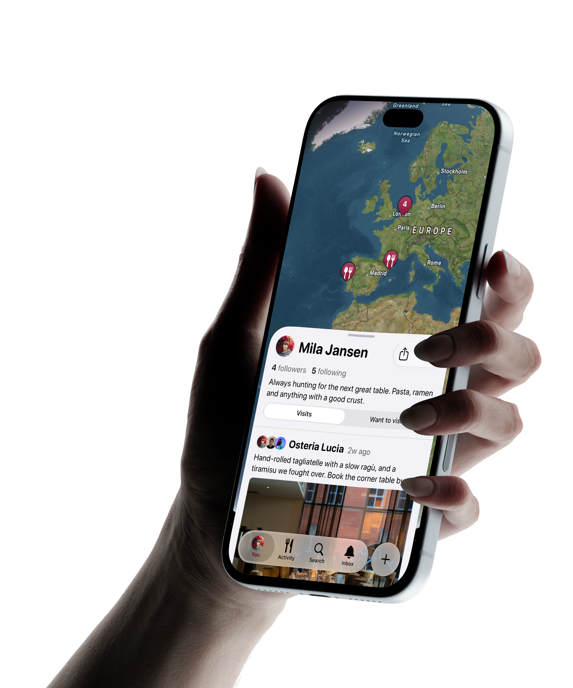

Share your taste of food with friends.
Gourmap is a private social network for seeing your people's favorite food places. Add your visits, share your experiences with others, and know where you want to eat.

Gourmap is a private social network for seeing your people's favorite food places. Add your visits, share your experiences with others, and know where you want to eat.
